内容要点
封面两张图，哪张是原图？ 答案是 B。《起风了》里，二郎站在晴天的云底下，白西装的影子是蓝灰的，脸上的暗部却还保留着肤色。 上一篇看的是暖光下的脸。这次换到晴天户外：头顶有蓝天，地面、衣服和脸上的影子，会不会都画成蓝色？ 先看地上。我挑了
知识结构
封面两张图，哪张是原图？ 答案是 B。《起风了》里，二郎站在晴天的云底下，白
封面两张图，哪张是原图？ 答案是 B。《起风了》里，二郎站在晴天的云底下，白
封面两张图，哪张是原图？ 答案是 B。《起风了》里，二郎站在晴天的云底下，白
封面两张图，哪张是原图？ 答案是 B。《起风了》里，二郎站在晴天的云底下，白
- 封面两张图，哪张是原图？ 答案是 B。《起风了》里，二郎站在晴天的云底下，白西装的影子是蓝灰的，脸上的暗部却还保留着肤色。 上一篇看的是暖光下的脸。这次换到晴天户外：头顶有蓝天，地面、衣服和脸上的影子，会不会都画成蓝色？ 先看地上。我挑了 14 位插画师画的晴天浅色地面，取了 20 处影子：12 处画成蓝、青、紫，7 处是灰色，还有 1 处偏橄榄色。我找的吉卜力背景里，灰色影子更常见。 有些影子吸出来只是灰，放回暖黄的地面上，却显得发蓝。单看色块和看整张画，感觉确实不一样。 也有不变蓝的时候。阴天的投影通常又淡又散。草地、黄土、红砖这些本身有颜色的表面，另外取的 7 处都没有直接画成蓝紫。草地的影子还是绿，黄土路的影子还是土色，但也能和亮处拉开差别。 白路和雪地的例子也很有意思：亮处几乎没颜色，影子反倒涂得很鲜。草地和黄墙的几张则相反，进了影子就暗下去，颜色也收了一些。 傍晚也没有统一的画法。13 处影子里，8 处画成蓝紫，4 处是暖色，还有 1 处是灰。影子里能接到天光，也能接到周围墙面和地面的反光。具体是哪种光造成了画里的颜色，只靠取色还判断不了。
封面两张图，哪张是原图？ 答案是 B。《起风了》里，二郎站在晴天的云底下，白西装的影子是蓝灰的，脸上的暗部却还保留着肤色。 上一篇看的是暖光下的脸。这次
1/14–4/14封面/要点：封面两张图，哪张是原图？ 答案是
封面两张图，哪张是原图？ 答案是 B。《起风了》里，二郎站在晴天的云底下，白西装的影子是蓝灰的，脸上的暗部却还保留着肤色。 上一篇看的是暖光下的脸。这次换到晴天户外：头顶有蓝天，地面、衣服和脸上的影子，会不会都画成蓝色？ 先看地上。我挑了 14 位插画师画的晴天浅色地面，取了 20 处影子：12 处画成蓝、青、紫，7 处是灰色，还有 1 处偏橄榄色。我找的吉卜力背景里，灰色影子更常见。 有些影子吸出来只是灰，放回暖黄的地面上，却显得发蓝。单看色块和看整张画，感觉确实不一样。 也有不变蓝的时候。阴天的投影通常又淡又散。草地、黄土、红砖这些本身有颜色的表面，另外取的 7 处都没有直接画成蓝紫。草地的影子还是绿，黄土路的影子还是土色，但也能和亮处拉开差别。 白路和雪地的例子也很有意思：亮处几乎没颜色，影子反倒涂得很鲜。草地和黄墙的几张则相反，进了影子就暗下去，颜色也收了一些。 傍晚也没有统一的画法。13 处影子里，8 处画成蓝紫，4 处是暖色，还有 1 处是灰。影子里能接到天光，也能接到周围墙面和地面的反光。具体是哪种光造成了画里的颜色，只靠取色还判断不了。
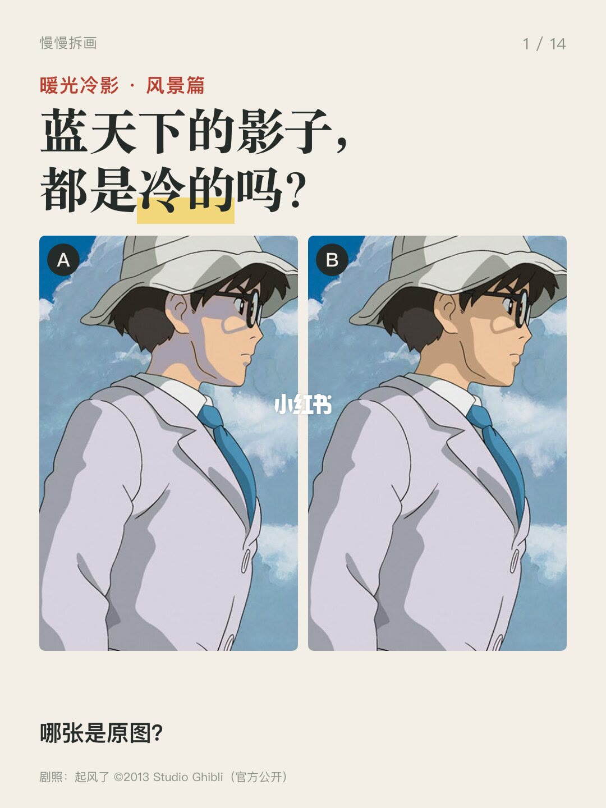
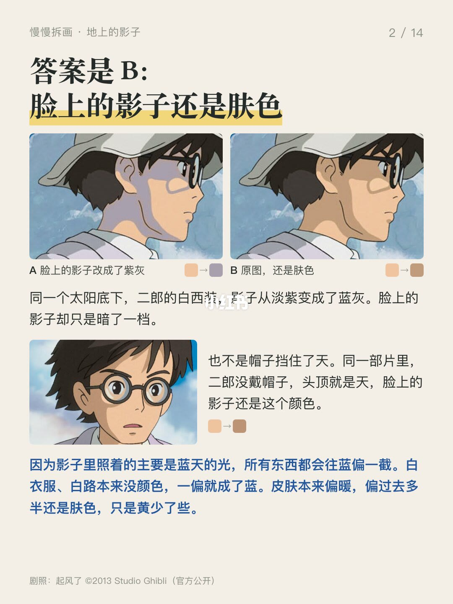
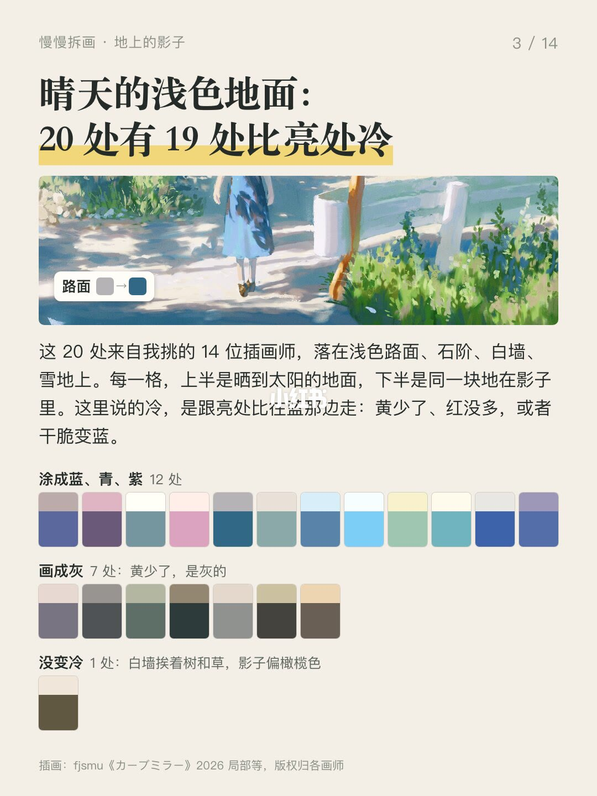
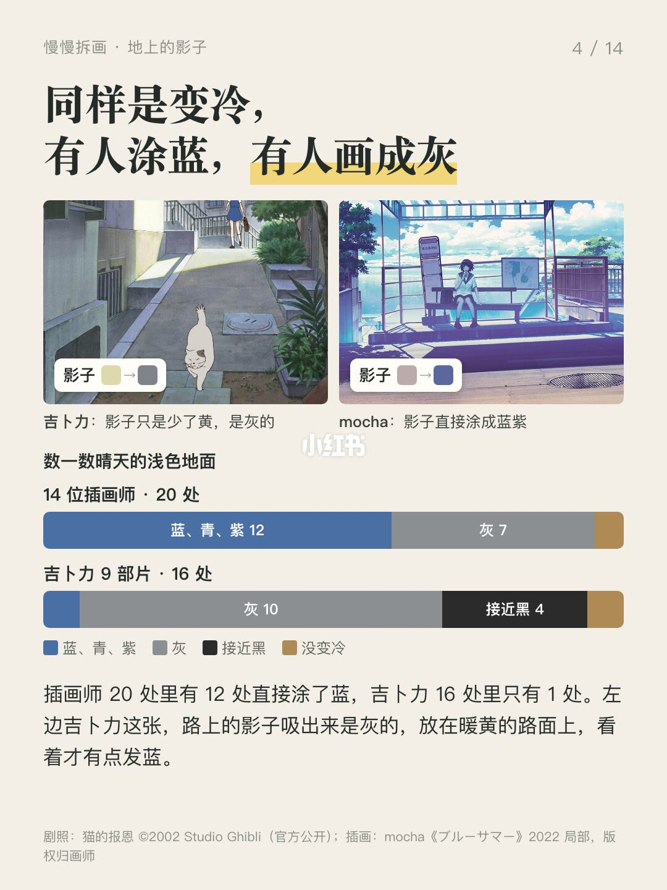
5/14–8/14第5/14页：暖光冷影风景篇：影子什么时候涂蓝
封面两张图，哪张是原图？ 答案是 B。《起风了》里，二郎站在晴天的云底下，白西装的影子是蓝灰的，脸上的暗部却还保留着肤色。 上一篇看的是暖光下的脸。这次换到晴天户外：头顶有蓝天，地面、衣服和脸上的影子，会不会都画成蓝色？ 先看地上。我挑了 14 位插画师画的晴天浅色地面，取了 20 处影子：12 处画成蓝、青、紫，7 处是灰色，还有 1 处偏橄榄色。我找的吉卜力背景里，灰色影子更常见。 有些影子吸出来只是灰，放回暖黄的地面上，却显得发蓝。单看色块和看整张画，感觉确实不一样。 也有不变蓝的时候。阴天的投影通常又淡又散。草地、黄土、红砖这些本身有颜色的表面，另外取的 7 处都没有直接画成蓝紫。草地的影子还是绿，黄土路的影子还是土色，但也能和亮处拉开差别。 白路和雪地的例子也很有意思：亮处几乎没颜色，影子反倒涂得很鲜。草地和黄墙的几张则相反，进了影子就暗下去，颜色也收了一些。 傍晚也没有统一的画法。13 处影子里，8 处画成蓝紫，4 处是暖色，还有 1 处是灰。影子里能接到天光，也能接到周围墙面和地面的反光。具体是哪种光造成了画里的颜色，只靠取色还判断不了。
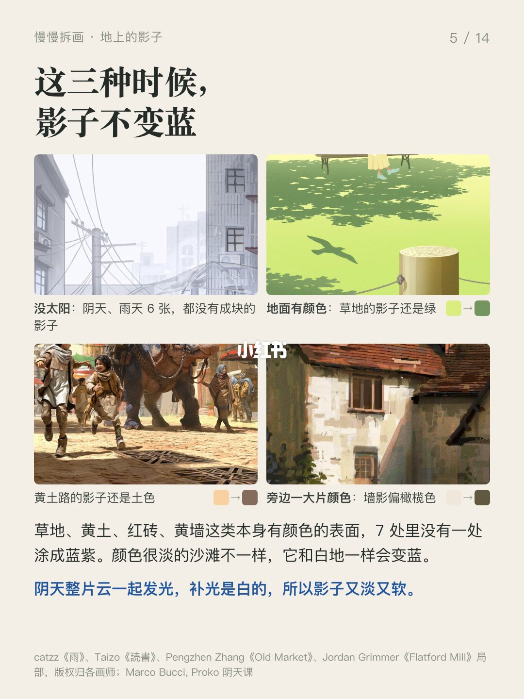
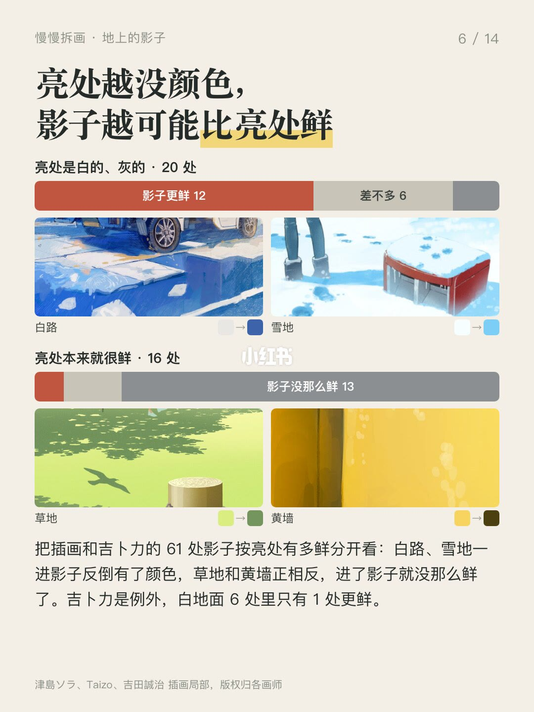
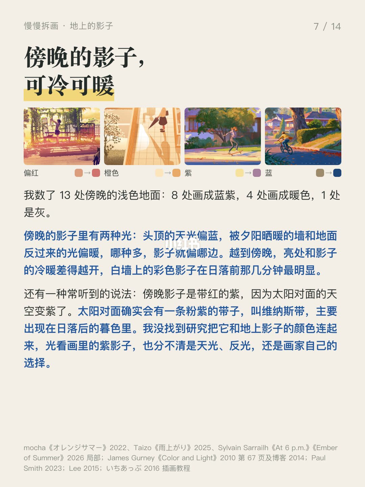
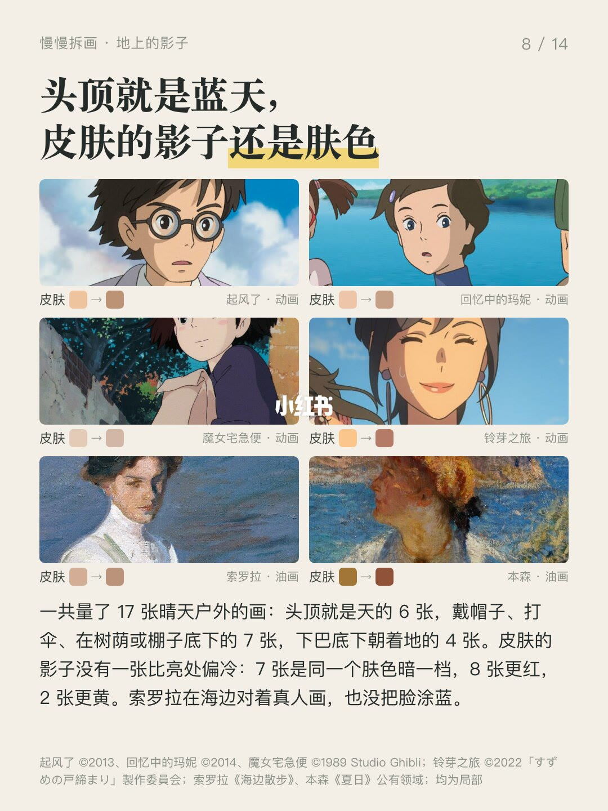
9/14–12/14第9/14页：暖光冷影风景篇：影子什么时候涂蓝
封面两张图，哪张是原图？ 答案是 B。《起风了》里，二郎站在晴天的云底下，白西装的影子是蓝灰的，脸上的暗部却还保留着肤色。 上一篇看的是暖光下的脸。这次换到晴天户外：头顶有蓝天，地面、衣服和脸上的影子，会不会都画成蓝色？ 先看地上。我挑了 14 位插画师画的晴天浅色地面，取了 20 处影子：12 处画成蓝、青、紫，7 处是灰色，还有 1 处偏橄榄色。我找的吉卜力背景里，灰色影子更常见。 有些影子吸出来只是灰，放回暖黄的地面上，却显得发蓝。单看色块和看整张画，感觉确实不一样。 也有不变蓝的时候。阴天的投影通常又淡又散。草地、黄土、红砖这些本身有颜色的表面，另外取的 7 处都没有直接画成蓝紫。草地的影子还是绿，黄土路的影子还是土色，但也能和亮处拉开差别。 白路和雪地的例子也很有意思：亮处几乎没颜色，影子反倒涂得很鲜。草地和黄墙的几张则相反，进了影子就暗下去，颜色也收了一些。 傍晚也没有统一的画法。13 处影子里，8 处画成蓝紫，4 处是暖色，还有 1 处是灰。影子里能接到天光，也能接到周围墙面和地面的反光。具体是哪种光造成了画里的颜色，只靠取色还判断不了。
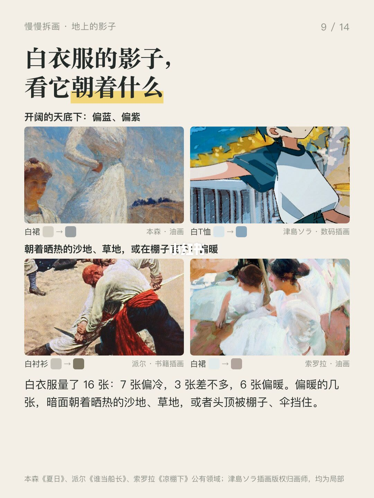
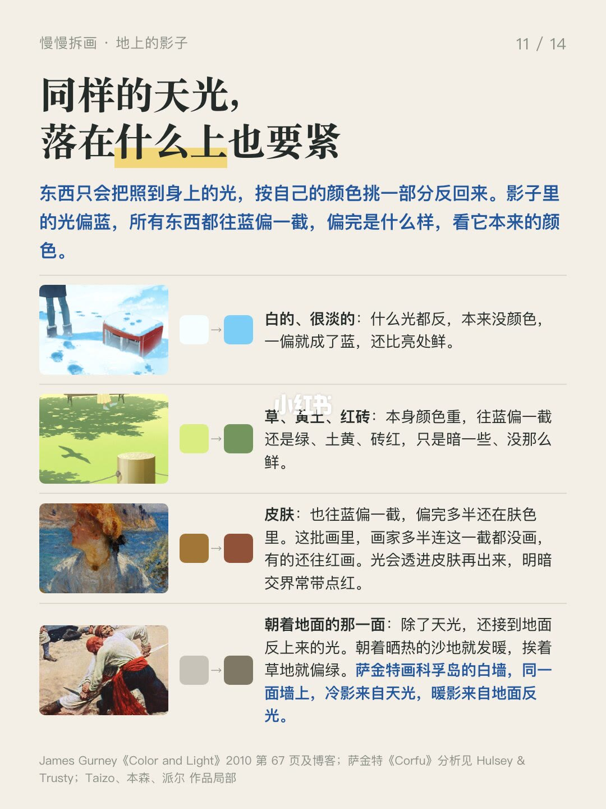
13/14–14/14第13/14页：暖光冷影风景篇：影子什么时候涂蓝
封面两张图，哪张是原图？ 答案是 B。《起风了》里，二郎站在晴天的云底下，白西装的影子是蓝灰的，脸上的暗部却还保留着肤色。 上一篇看的是暖光下的脸。这次换到晴天户外：头顶有蓝天，地面、衣服和脸上的影子，会不会都画成蓝色？ 先看地上。我挑了 14 位插画师画的晴天浅色地面，取了 20 处影子：12 处画成蓝、青、紫，7 处是灰色，还有 1 处偏橄榄色。我找的吉卜力背景里，灰色影子更常见。 有些影子吸出来只是灰，放回暖黄的地面上，却显得发蓝。单看色块和看整张画，感觉确实不一样。 也有不变蓝的时候。阴天的投影通常又淡又散。草地、黄土、红砖这些本身有颜色的表面，另外取的 7 处都没有直接画成蓝紫。草地的影子还是绿，黄土路的影子还是土色，但也能和亮处拉开差别。 白路和雪地的例子也很有意思：亮处几乎没颜色，影子反倒涂得很鲜。草地和黄墙的几张则相反，进了影子就暗下去，颜色也收了一些。 傍晚也没有统一的画法。13 处影子里，8 处画成蓝紫，4 处是暖色，还有 1 处是灰。影子里能接到天光，也能接到周围墙面和地面的反光。具体是哪种光造成了画里的颜色，只靠取色还判断不了。
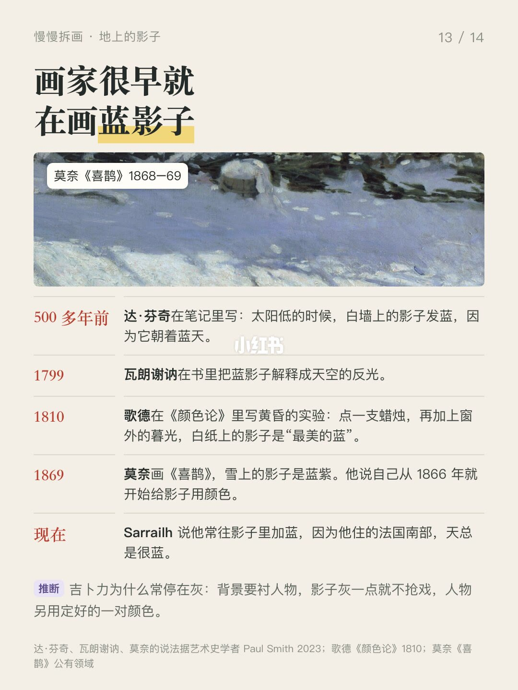
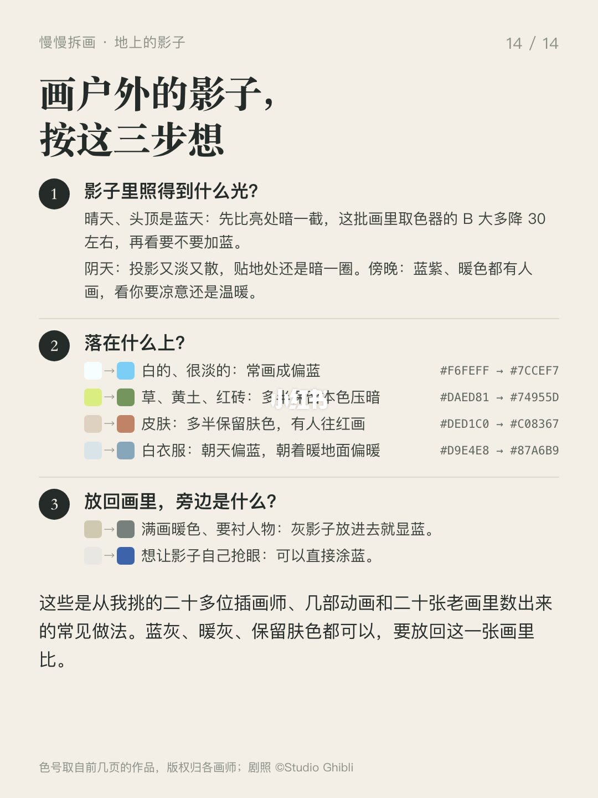
口述/画面要点（14段）
结合 Whisper medium 与画面大字整理；专有名词已校对。
封面/要点：封面两张图，哪张是原图？ 答案是 B。《起风了》里，二郎站在晴天的云底下，白
第2/14页：暖光冷影风景篇：影子什么时候涂蓝
第3/14页：暖光冷影风景篇：影子什么时候涂蓝
第4/14页：暖光冷影风景篇：影子什么时候涂蓝
第5/14页：暖光冷影风景篇：影子什么时候涂蓝
第6/14页：暖光冷影风景篇：影子什么时候涂蓝
第7/14页：暖光冷影风景篇：影子什么时候涂蓝
第8/14页：暖光冷影风景篇：影子什么时候涂蓝
第9/14页：暖光冷影风景篇：影子什么时候涂蓝
第10/14页：暖光冷影风景篇：影子什么时候涂蓝
第11/14页：暖光冷影风景篇：影子什么时候涂蓝
第12/14页：暖光冷影风景篇：影子什么时候涂蓝
第13/14页：暖光冷影风景篇：影子什么时候涂蓝
第14/14页：暖光冷影风景篇：影子什么时候涂蓝